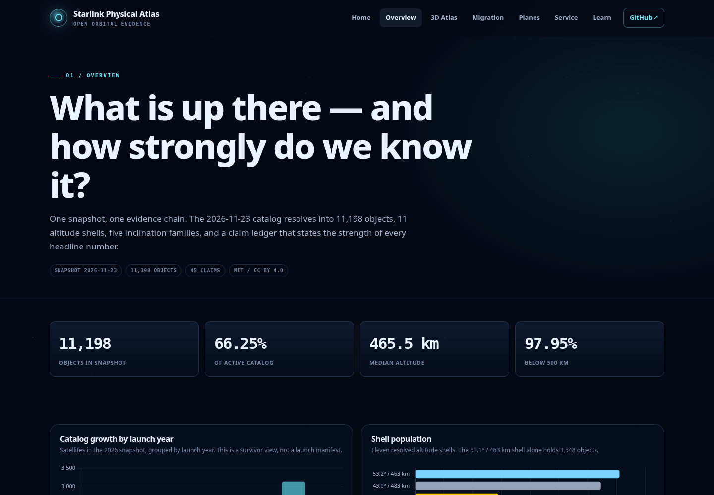
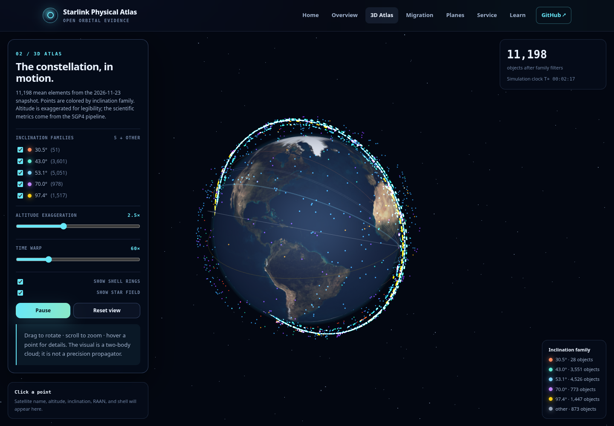
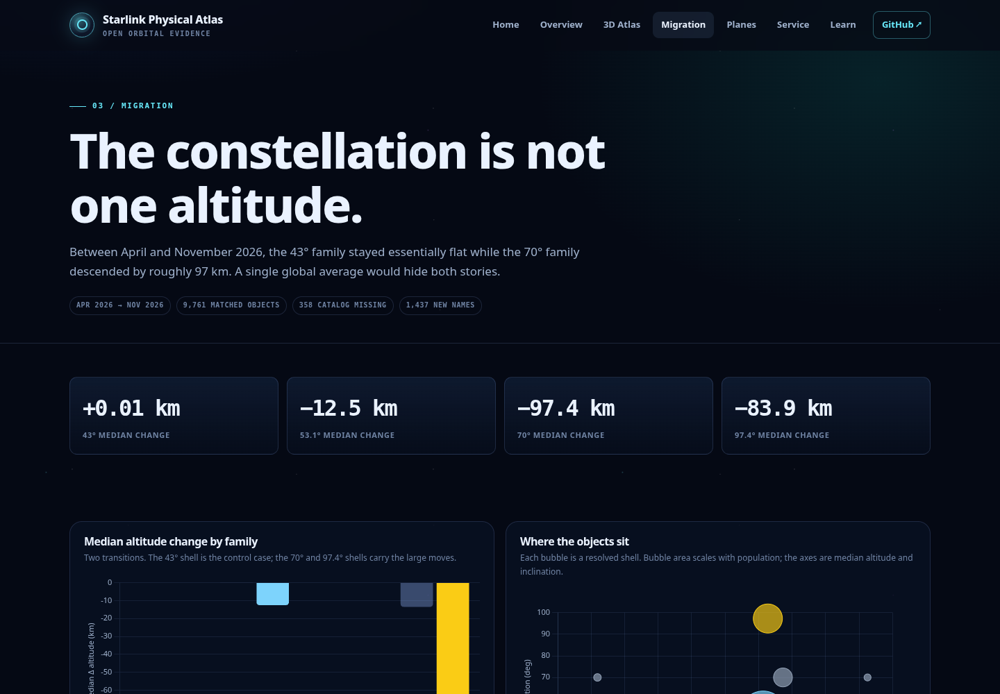
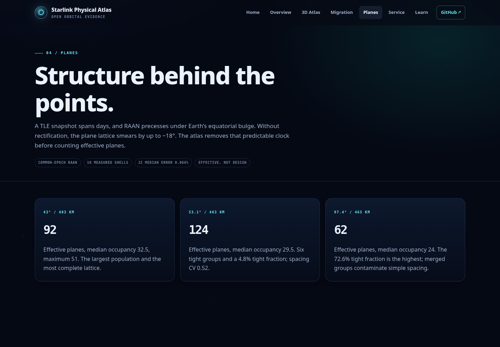
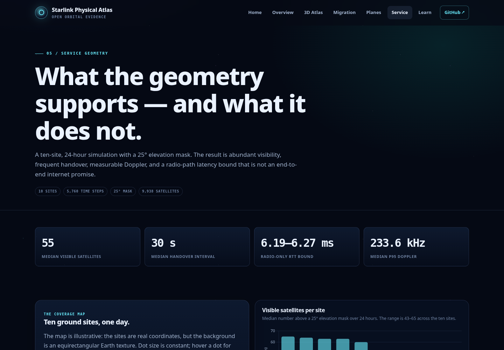
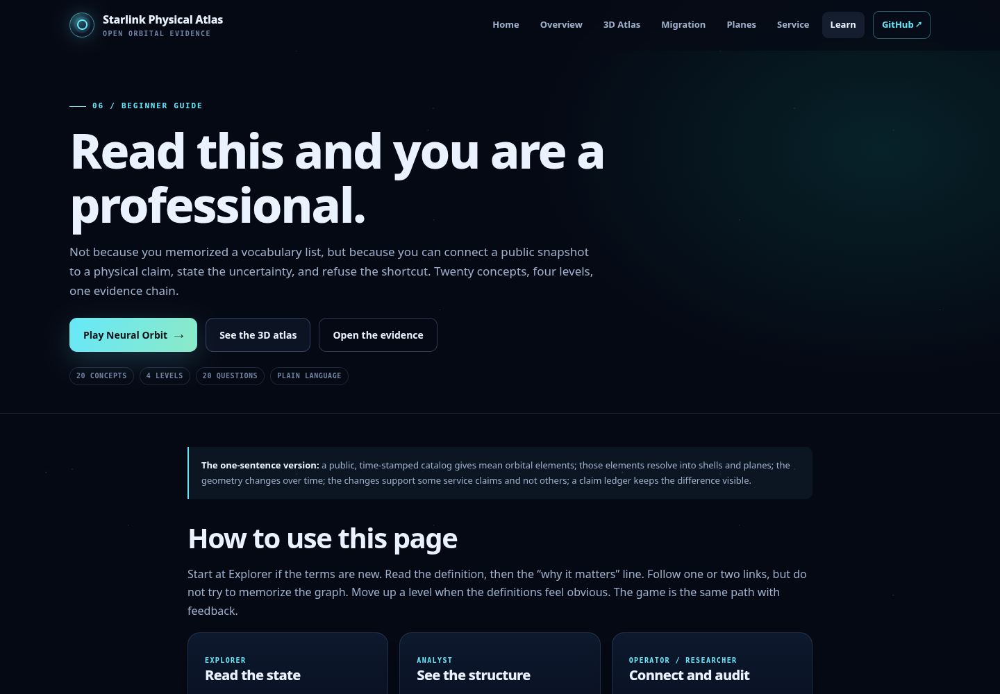
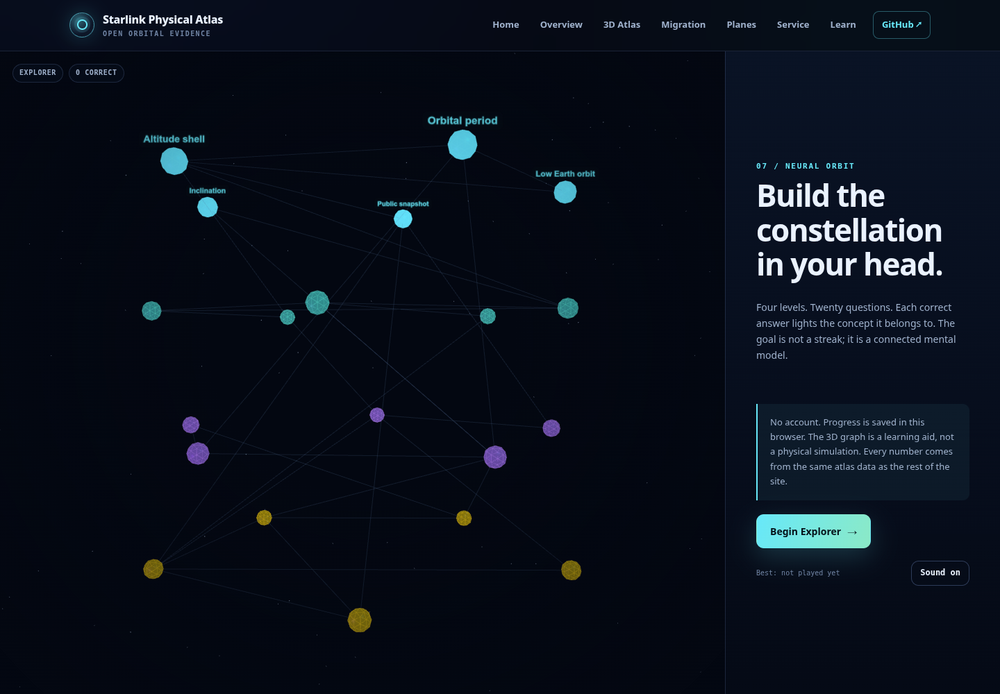

The constellation, measured.
A physical atlas of 11,198 Starlink objects built from public orbital data. See the shells, the migration, the service geometry, and the evidence behind every claim — in 3D, in charts, and in plain language.
Seven pages. One evidence chain.
Every tab below is the real product page, loaded lazily in an iframe. Switch tabs with the keyboard, open any page full screen, or browse the complete site.







One dataset. Five questions.
Each page answers a different question, from “how many?” to “what does the geometry actually support?”
What is up there?
Population, altitude, launch cadence, shell structure, and the evidence ledger in one executive view.
Where is it?
Fly through 11,198 objects colored by inclination family, with shell rings, time controls, and hover details.
How is it changing?
Track shell-specific altitude migration, population flow, and the difference between catalog attrition and reentry.
How is it organized?
See the effective plane lattice after J2 rectification — and why these are measured clusters, not Walker design numbers.
What does it enable?
Coverage, handover, Doppler, and radio-path latency bounds for ten ground sites over 24 hours.
How do I read it?
A beginner-to-researcher path through 20 concepts, with a 3D game that turns the vocabulary into intuition.
Every number has a path back to the data.
Frozen inputs, pinned dependencies, deterministic outputs, and a one-command pipeline. The README is rendered from the same metrics the site uses.
45 claims. Four evidence levels.
Verified, consistent, partially verified, or external-only. Nothing is silently promoted to fact, and contradictions are reported rather than hidden.
Limits are part of the product.
Public data lacks gateway coordinates and NORAD IDs across snapshots. The atlas reports bounds, flags matching assumptions, and separates radio geometry from end-to-end service.
A constellation in transition.
The 2026 snapshot is not a static shell. The 43° family is stable at about 483 km. The 70° family dropped roughly 97 km. The 97.4° shell descended about 84 km. Those are different physical stories, and a single global average would erase them.
At the same time, the geometry is abundant: a 25° mask leaves a median of 55 visible satellites per site, with a best-satellite handover every 30 seconds. The radio-path bound is 6.19–6.27 ms — a geometric result, not an internet-latency promise.
“The atlas is a chain: public snapshot, mean elements, shells and planes, dynamics, service geometry, and a claim ledger. Each link is reproducible, and each limit is stated.”Neural Orbit · final level
New to orbital mechanics? You will know more than most interview candidates.
The beginner guide explains every term in plain language, then connects it to the measured numbers. The game is the fast path; the learn page is the reference.